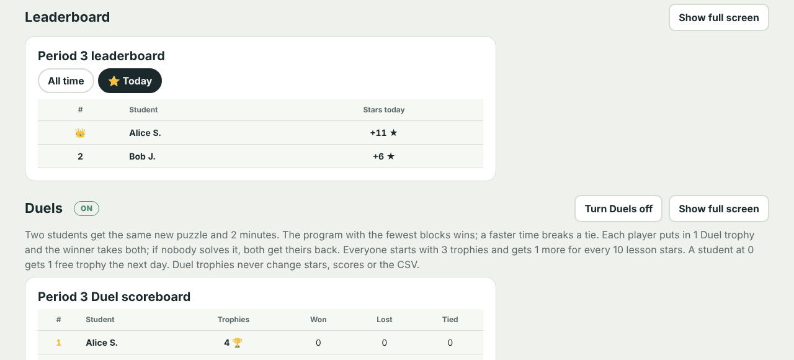
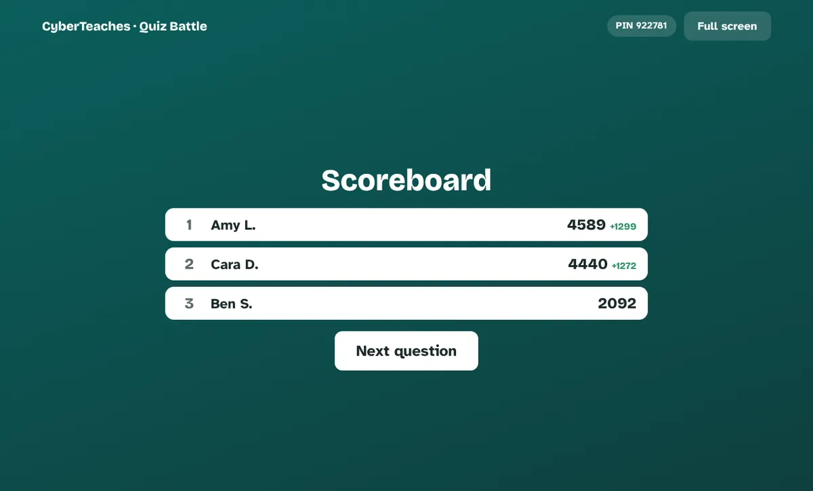

Free computer science and cybersecurity curriculum for middle and high school
Ready-to-teach coding and cybersecurity courses with lesson plans, slides, classwork, auto-graded puzzles and a live Teacher Dashboard. Written by a computer science teacher, free for every classroom.

A course for every class you teach
Start middle schoolers with block coding, move to Python and app design, then teach AP Computer Science Principles, AP Cybersecurity, AP Networking or CompTIA Security+.
Rover Coding
Snap blocks together to drive a rover: sequences, repeat loops, repeat until, if / else and variables, then code tank battles. Easy, Medium and Hard levels.
Start coding →Text coding · PythonPython Quest
Write real Python to guide an explorer through a jungle temple. Commands, for loops and more, with hints and friendly error messages.
Play Python Quest →Project course · 37 lessonsApp Builder
Find a real problem, design an app, learn variables, if / else, loops and lists, and publish it. Includes a Congressional App Challenge track.
Build an app →AP course · 35 lessonsAP Computer Science Principles
All five Big Ideas with pseudocode, labs, AP-style questions and a free full-length practice exam.
Start AP CSP →AP course · 24 lessons · 11 labsAP Cybersecurity
Social engineering, physical security, networks, devices, cryptography and AI in security, unit by unit, with videos.
Start AP Cybersecurity →Certification · SY0-801 · 27 lessonsCompTIA Security+
Prepare for the SY0-801 exam domain by domain, with labs and exam-style practice questions.
Start Security+ →Every coding lesson comes ready to teach
- Lesson plans with objectives, timing, vocabulary, CSTA computer science standards and WIDA ELL standards.
- Slides to project before students start the puzzles.
- Printable classwork with an answer key, plus ELL supports: word banks, sentence frames and pictures.
- Digital classwork as Word files you can post in Google Classroom.
- Three levels (Easy, Medium, Hard) for different grades, ages or experience. Set one per class or per student.
- Unit reviews with a study guide and a quiz that reports scores to you.


Games your students ask for
- Quiz Battle: a live quiz game on the projector. Students join with a PIN from any device.
- Duels and Flag Race: head-to-head coding races. Fewest blocks wins. You turn them on per class.
- Leaderboards and ranks: all-time and daily class leaderboards with army-style rank badges.
Set up your class in four steps
- Sign in to the Teacher DashboardUse your Google account or an email and password, and request a free teacher account.
- Create a classYou get a class code. Students join with it, or you make usernames and passwords for students who do not have email.
- Choose a level and unlock lessonsPick Easy, Medium or Hard for the class or for one student, and lock lessons until you are ready.
- Watch progress liveSee stars, scores out of 100 and quiz results for every student and every lesson.
Free AP and certification practice
Every AP course has lesson pages with notes, vocabulary and practice questions with answers that students can use on their own.
Frequently asked questions
Is CyberTeaches really free for teachers?
Yes. The courses, lesson plans, slides, classwork, Teacher Dashboard and games are free. Optional companion books are sold on Amazon.
Which grades is it for?
Middle and high school, grades 6 to 12. Rover Coding and Python Quest work for beginners, and the AP courses and Security+ are for high school.
Do my students need an email address?
No. Students can sign in with Google, or you can create a username and password for each student in the Teacher Dashboard.
Does it work on Chromebooks and with Google Classroom?
Yes. Everything runs in the web browser, so Chromebooks, laptops and tablets work. Digital classwork comes as Word files you can post in Google Classroom, and you can share course links in any LMS.
Are the lessons aligned to standards?
The coding lesson plans list CSTA K-12 Computer Science Standards and WIDA English Language Development Standards. The AP courses follow the College Board course units.
Can I use it with Clever?
Yes, your school can add CyberTeaches as a link in the Clever Portal.